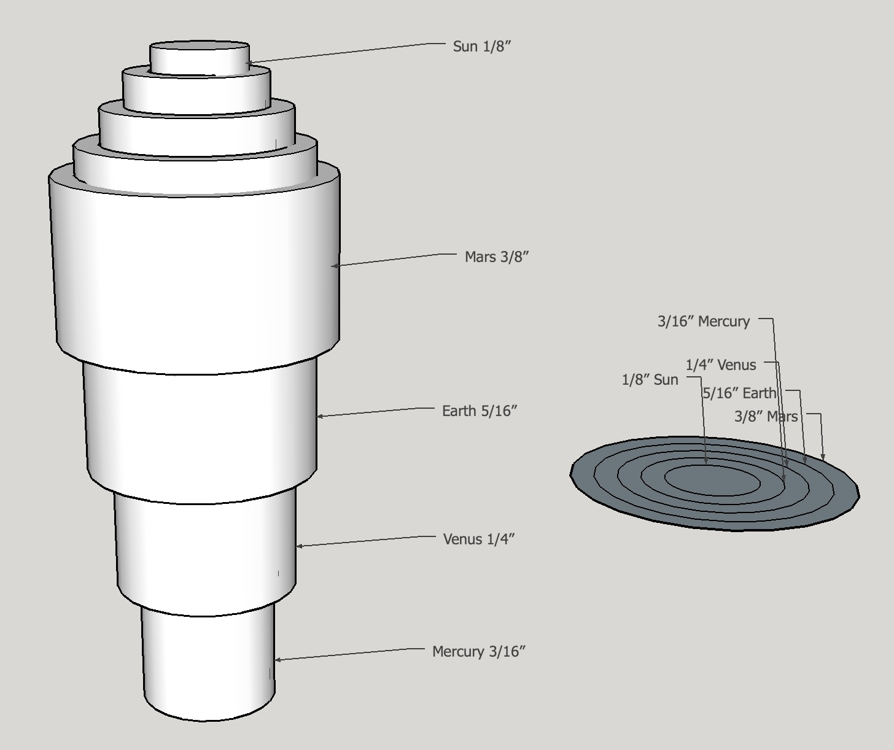

At long last constructing a four planet orrery is about to begin. This page covers the plan for the orrery as well as some key specifications. An orrery is a scale model of the solar system. There are many types available and they have been constructed for almost 2000 years. The oldest known example is the very complex and still to be completely understood Antikythera Device. The orrery whose construction is discussed herein is a four planet orrery: Sun, Mercury, Venus, Earth, and Mars. It is designed to accurately reflect the relative positions and motions of these planets. It is also a fairly simple example, using a simple gear stack and does not include moving moons of either Earth or Mars. This orrery uses rings holding a planet ‘ball’ to represent the planets in their orbits as opposed to ‘balls on wires’ which is another common orrery type.
Thank goodness for the Sun centered solar system. Designing an Earth centered orrery to reproduce the observed motions of the planets would be quite the nightmare.

The first challenge in designing an orrery is selecting a scale for the planetary orbits and designing a gear train that will accurately reproduce the relative time required for each planet to circle the sun. Relative in this case means relative to the Earth. Table 1 contains some pertinent facts about the eight currently approved planets. These numbers served as constraints in the design process.
The numbers highlighted are particularly pertinent to this orrery.
This orrery includes only the first four planets. Including Jupiter or other planets challenges the scale required to keep things to a reasonable size. For example, if Earth’s orbit is represented by a 5” ring then Mercury’s ring is 2” and Jupiter would require a 26” ring. Including the outer planets in an orrery requires either very small inner planetary rings or incorrectly representing the orbital scales. Orbital inclination is not represented in this orrery and Mercury's much more elliptical orbit is not represented either. The planetary specifications reproduced relatively and accurately here are: the distance from the sun, the orbital period, and the size of each planet, all relative to the Earth. (The sun’s size is not represented to scale as it is approximately 110 times the size of the Earth. Earth's moon is also represented. It's diameter is 0.27 times the Earth's. Mars's two moons, Phobos and Deimos, are too small (0.002 & 0.001 X) to represent other than with dots.(The planet's sizes relative to their orbital sizes are also not to scale for obvious reasons.) A simplified diagram of the orrery is depicted in Figure 1. Of further note is the lack of movement of Earth's moon. Including this movement would have led to a much more ornery orrery.
| Planet | Diameter | Sun Distance | Sun Distance | Orbital Period | Orbital Inclination | Planetary Axis Tilt | Rotational Period | Number of Moons |
|---|---|---|---|---|---|---|---|---|
| (relative) | (A.U.) | (miles) | (years) | (°) | (°) | (hours) | (confirmed) | |
| Mercury ☿ | 0.38 | 0.39 | 36,253,000 | 0.24 | 7.0 | 0 | 59 (days) | 0 |
| Venus ♀ | 0.95 | 0.72 | 66,928,000 | 0.62 | 3.9 | 177 | -243 (days) | 0 |
| Earth ♁ | 1.00 | 1.00 | 92,956,000 | 1.00 | 0 | 23 | 23.9 | 1 |
| Mars ♂ | 0.53 | 1.52 | 141,634,900 | 1.88 | 1.9 | 25 | 24.6 | 2 |
| Jupiter ♃ | 11.21 | 5.20 | 1,106,200,000 | 11.9 | 1.3 | 3 | 10 | 79 |
| Saturn ♄ | 9.45 | 9.54 | 2,742,200,000 | 29 | 2.5 | 27 | 11 | 62 |
| Uranus ♅ | 4.01 | 19.2 | 7,808,300,000 | 84 | 0.8 | 98 | -17 | 27 |
| Neptune ♆ | 3.88 | 30.1 | 15,337,700,000 | 165 | 1.8 | 28 | 16 | 14 |
Note Venus's backward planetary axial rotation and almost 180° tilt. i.e. Something must have hit it and knocked it over at some point in its formation similar to Earth's collision with a Mars sized object producing its oversized moon (about 0.27 times the Earth's radius).

Discussion of some of the design considerations is in order. The base, rings, and gears are made of brass. The outermost or Mars ring may require support at its periphery as it is only mounted on the tube through its center. It was envisioned that this support could be provided with minimal friction by placing small steel balls in the upper support below the Mars ring. Initially I planned to use three or four bars as spokes to connect the outer planet holding ring to the inner axle holding ring. After seeing Weston Bye's magnetic clock with its delicate circles connecting the inner and outer rings a change was made.
Figure 2 shows a schematic representation of the tubes which will connect the gears to the planetary rings. The topmost gear is soldered to and will drive the largest or Mars tube, which is affixed to the lowest planetary ring. The next smaller tube is soldered to the next gear down the driven stack and affixed to the Earth ring. Next comes the Venus tube and finally Mercury's tube. The sun will be mounted on a 1/8" rod running through the center of the Mercury tube.
The next consideration is the gear train required for driving the motions of the planets. Since this is my first orrery I decided to keep the gear train as simple as possible. Using two gears per planet in a pair of gear stacks seemed to be the simplest solution. The way gear stack pairs work is one stack has all of the gears fixed together so they all rotate in sync. In the second stack the gears are not fixed one to the other and rotate independently at speed ratios set by the number of gear teeth. One question remained: how accurately can the rotational periods be reproduced using only two gears. The two gear stacks are denoted throughout this construction as “driver” and “driven”. The driver stack is the fixed stack and will be turned by a worm, thus all rotating with the same period as the worm wheel. The worm gear and wheel combination is not shown in Figure 1 but will be the driving mechanism when connected to a shaft and handle. The worm gear axle’s handle will sit outside of the main support structure. The driver gear stack consists of the worm wheel and four gears; one for each planet ring. These gears are all fixed relative to one another by attachment to the same shared shaft or as implemented here with a "key". The driven gear stack has four gears, one for each planet ring, and they all rotate independently on the concentric tubes.
The gear train is the source of any accuracy in the representation of the planetary orbital periods. In order to model the various gear ratios possible and how accurately they represent the orbital periods (shown above in Table 1) a spreadsheet was constructed. For all four gear pairs to mesh between the two stacks, the total number of teeth must be the same across each gear pair. The spreadsheet looked at the impact of varying this total versus the accuracy of the resultant orbital period. Over one hundred teeth totals were explored. Two examples from this spreadsheet are given in Table 2. Of all of the possibilities considered these two were the best representations of the orbital periods. Higher accuracy would require more complex gear trains. The 78-tooth set seemed perfectly adequate for my first attempt at building an orrery with an orbital period error of less than 1% relative to Earth’s orbital period. This orrery will not be able to accurately predict relative planetary positions over time spans of centuries! Another limitation to consider when selecting a gear train is the gear size (and corresponding number of teeth). I wanted to keep the number of teeth between 12 and 75 just for practicality. Gears smaller than 12 teeth are difficult to make and the larger the gear the longer it takes to make by the methods available in my shop. A total of 78 teeth was the perfect choice.
| Planet | Driver Gear Teeth | Driven Gear Teeth | Error |
|---|---|---|---|
| Total Teeth = 78 | |||
| Mercury | 15 | 63 | 0.72% |
| Venus | 30 | 48 | 0.62% |
| Earth | 39 | 39 | 0.00% |
| Mars | 51 | 27 | 0.11% |
| Total Teeth = 110 | |||
| Mercury | 21 | 89 | 1.63% |
| Venus | 42 | 68 | 0.56% |
| Earth | 55 | 55 | 0.00% |
| Mars | 72 | 38 | 0.42% |
The frame presented yet another challenge. It needed to be made from reasonably sturdy brass stock, so I chose 3/16”. Brass is too expensive for me to purchase sufficient stock to cut out two circles (top and bottom) from sheet stock. This meant making the frame from bar stock. For a couple of reasons I chose to make the frame in the shape of a dodecagon (12-sides). First, this would correspond to the months of the year, though not exactly. Secondly, it would be closer to a circle and less noticeably polygonal than an octagon or a decagon. So how does one make a polygon from bar stock? Making some kind of lap joint and either screwing, soldering, or riveting the pieces together is incredibly challenging as it requires angled pockets, difficult to make accurately. That leaves butt joints. These would also need to be cut quite accurately or the accumulation of error as they were joined around the loop would leave one with a poor fit for the closing joint. A few calculations showed that using a sine bar should be sufficiently accurate. Each leg of the dodecahedron would need to have both ends cut to a 15° angle. Assuming a 5” sine bar is used then the vertical displacement is about 1.3”. Consequently, 0.1° is approximately 0.009” and 0.01° is about 0.001”. So if my setup is accurate to 0.01°, then the last joint error (assuming maximal error for each leg) is about 0.12 degrees. The butt joints will be soldered so 2-4 thou gaps are left for capillary action at each joint and these gaps should provide allowance for this cumulative error.
Making the worm gear and worm wheel are very similar to turning a screw and creating a regular gear. There are two key features of the worm gear system that are important to the design of the orrery. First, the number of degrees of turn of the wheel upon a full revolution of the worm is fixed by the number of teeth on the wheel. 52 teeth on the wheel gives one 52nd of a full turn per turn of the worm gear’s handle or very close to one week of time. Thus, it will take 52 turns of the handle for the earth to make one complete revolution around the sun. An alternative is using a 26 tooth wheel, so one complete worm revolution is equivalent to two weeks. Second, rotating the worm gear clockwise as seen from a handle will rotate the wheel clockwise if the worm is on the front side of the wheel as seen from above. With the driving gear stack rotating clockwise, the driven gear stack and the planet rings will rotate counterclockwise. The planets rotate around the sun in a counterclockwise direction as seen from above the earth’s north pole, so the worm gear needs to be mounted to the front side of the wheel as seen from above (assuming the shaft handle is on the side of the gear stacks as shown.)
A builder living south of the equator might want to flip this around!

In the picture above the bottom driven gear is shown incorrectly as "driven" by the worm wheel. This is not the case, but it makes the picture a little easier to understand.
Aligning the worm, driven stack and worm shaft brackets took some thought. A depthing tool was made to find the optimum distance between the two gear stacks vs. just using the theoretical 1.300". The worm and wheel separation could not be determined with the depthing tool and trial and error was the alternative. The two brackets spanning the worm gear needed to be far enough apart to avoid the wheel. Finally, these brackets needed to be carefully aligned so the correct worm/wheel distance could be set. The following thought process helped determine the best alignment for all of these moving parts. Since everything is confined to the 2" width of the supporting span, the worm wheel needed to be offset above this center location of the driven gear stack. Setting the wheel about 5/16" above center seemed adequate. The worm-wheel center-to-center distance is about 11/16". The worm is set slightly below center, about 5/16". In order for the two brackets to miss the 26-tooth wheel they need to be set about 1/8" from the end of the worm. Consequently some bronze spacers would need to be made. With the brackets spaced appropriately this left about 7/16" between the end of the bracket and the center of the driven gear. This was plenty of room for the 1/2" diameter spacer at the bottom of the driven gear stack.
A piece of plywood 1/4" X 2" X 8" was chosen to serve the role of the eventual brass supporting span. A center hole was marked. The two earth gears were place on the depthing tool, which was adjusted so the gears meshed nicely. This distance was transferred to the plywood base by marking an arc with the depthing tool. This arc was marked 5/16" above center for the driver gear stack hole. A mark was also made for one hole in the right bracket. Once the worm wheel was in place the worm in the bracket could be rotated to achieve best fit and the other holes marked and drilled.
The last major design consideration was dealing with setting the planets to their proper positions around the sun in a relative sense and with respect to the zodiacal constellations that I planned as decoration for the frame. In other words a method of planetary ring adjustment needed to be built into the system. After considering a variety of ideas the best seemed to be some means of fixing the rings to the tubes via a rotatable hub. So a hub must be designed that is screwed to the ring and uses a set screw to hold the hub to the planet's tube. The hub design chosen is depicted below. The Radius = 3/16" dimension of the center hole, as shown for the Mars ring hub, needs to be reduced to fit the tubes of the other three planets.
Finally, a few thoughts about decorating the orrery are in order. The frame rings are like the heavens above and fixed relative to the solar system. So two things are planned for the frames. They need to show the months and maybe even the weeks of the year. (Days might be overkill.) In addition it would be great to depict the constellations of the zodiac in some form. Using text for months and constellations requires some means of engraving on the brass. Consequently, a course in metal engraving was planned and taken. Engraving would also allow for using the astronomical symbols for the planets and the constellations. Other text can also be imagined that would be appropriate for the planetary rings. The final idea was to not only label the approximate positions of the zodiacal constellations, but to also show the constellations. This could be as simple as drilling holes for each of the stars or filling the holes with a contrasting metal plug or inserting some other material in the hole. Since this orrery is to be a portrayal of reality, the thirteen zodiacal constellations (including Ophiuchus) and their dates of arrival as recognized by astronomers was selected over the usual 12 constellations and dates used by astrologers. The following table displays some key facts about these 13 constellations.
| Constellation | Translation | Symbol | Brightest Star | Ptolemaic Dates | IAU Dates |
|---|---|---|---|---|---|
| Aries | Ram | ♈ | Hamal | 21 Mar - 20 Apr | 19 Apr - 13 May |
| Taurus | Bull | ♉ | Aldebaran | 21 Apr - 21 May | 14 May - 19 Jun |
| Gemini | Twins | ♊ | Pollux | 22 May - 21 Jun | 20 Jun - 20 Jul |
| Cancer | Crab | ♋ | Al Tarf | 22 Jun - 22 Jul | 21 Jul - 9 Aug |
| Leo | Lion | ♌ | Regulus | 23 Jul - 22 Aug | 10 Aug - 15 Sep |
| Virgo | Maiden | ♍ | Spica | 23 Aug - 23 Sep | 16 Sep - 30 Oct |
| Libra | Scales | ♎ | Zubeneschamali | 24 Sep - 23 Oct | 31 Oct - 22 Nov |
| Scorpius | Scorpion | ♏ | Antares | 24 Oct - 22 Nov | 23 Nov - 29 Nov |
| Ophiuchus | Serpent Bearer | ⛎ | Rasalhague | 30 Nov - 17 Dec | |
| Sagittarius | Centaur (Archer) | ♐ | Kaus Australis | 23 Nov - 21 Dec | 18 Dec - 18 Jan |
| Capricornus | Horned Goat | ♑ | Deneb Algedi | 22 Dec - 20 Jan | 19 Jan - 15 Feb |
| Aquarius | Water Bearer | ♒ | Sadalsuud | 21 Jan - 19 Feb | 16 Feb - 11 Mar |
| Pisces | Fish | ♓ | Eta Piscium | 20 Feb - 20 Mar | 12 Mar - 18 Apr |
A star chart for each of the usual 12 constellations is shown below. A night sky representation below depicts Ophiuchus.


The planetary alignment needs to be set eventually. A good site to see the current planetary alignment is fourmilab. The size of the display can be altered and the view can be set to show only the inner four planets. Other data is available for your specific longitude/latitude.